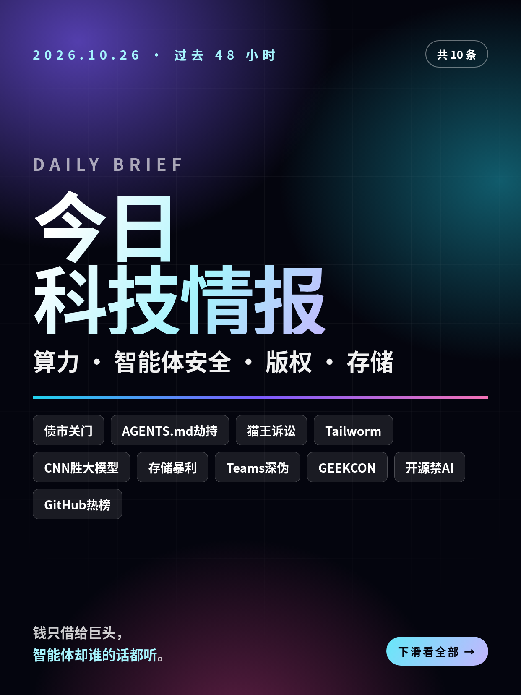
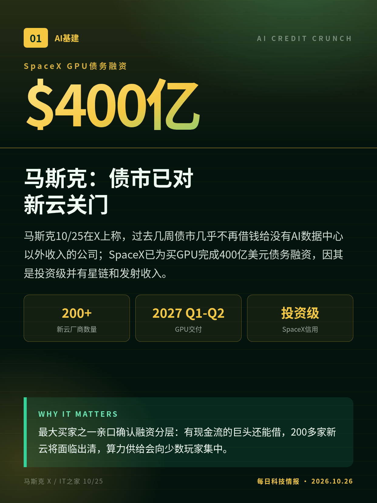
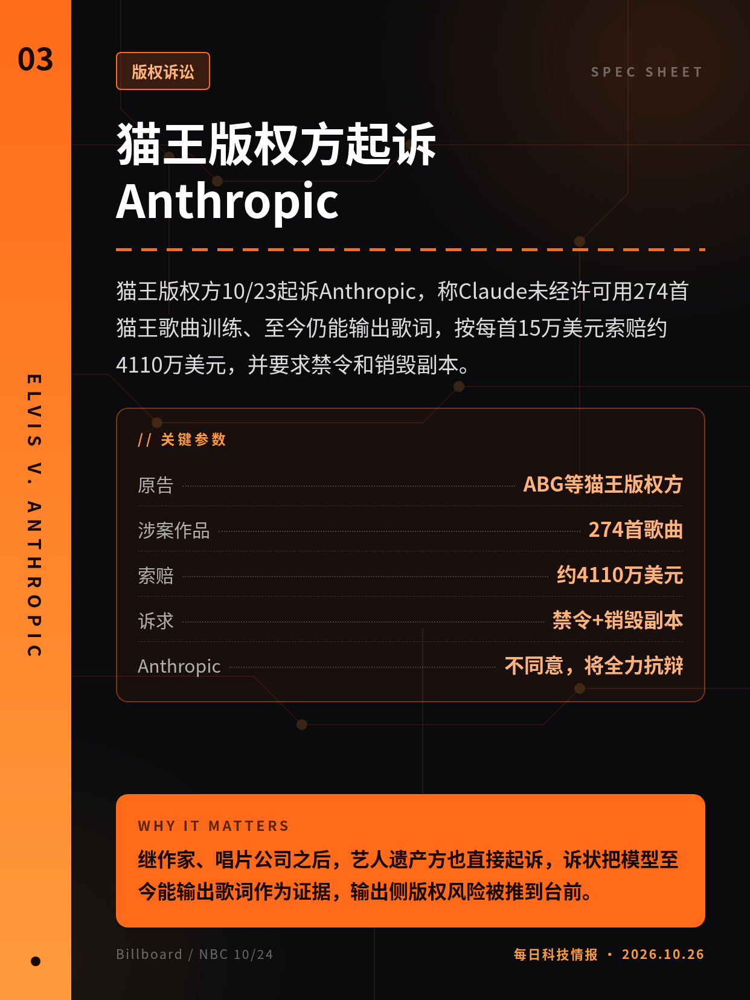
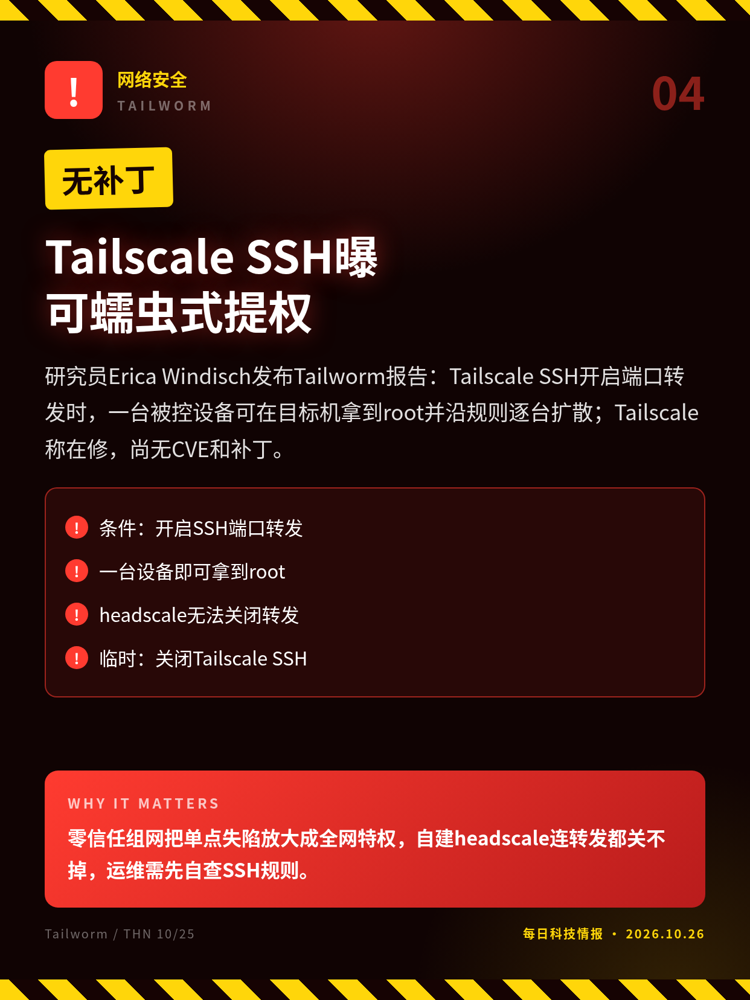
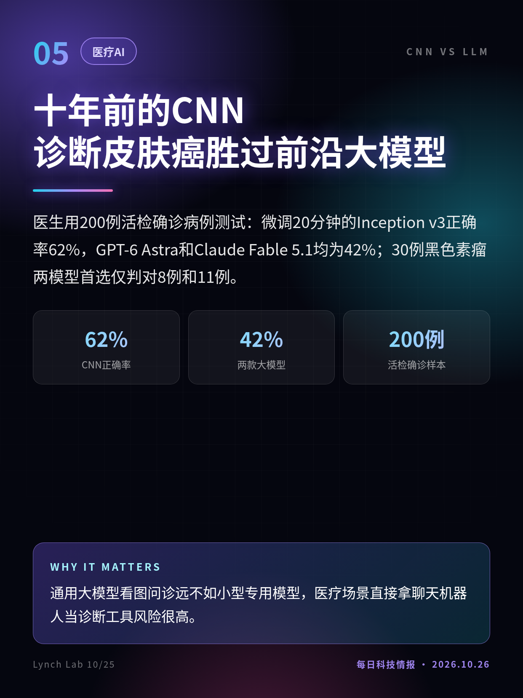
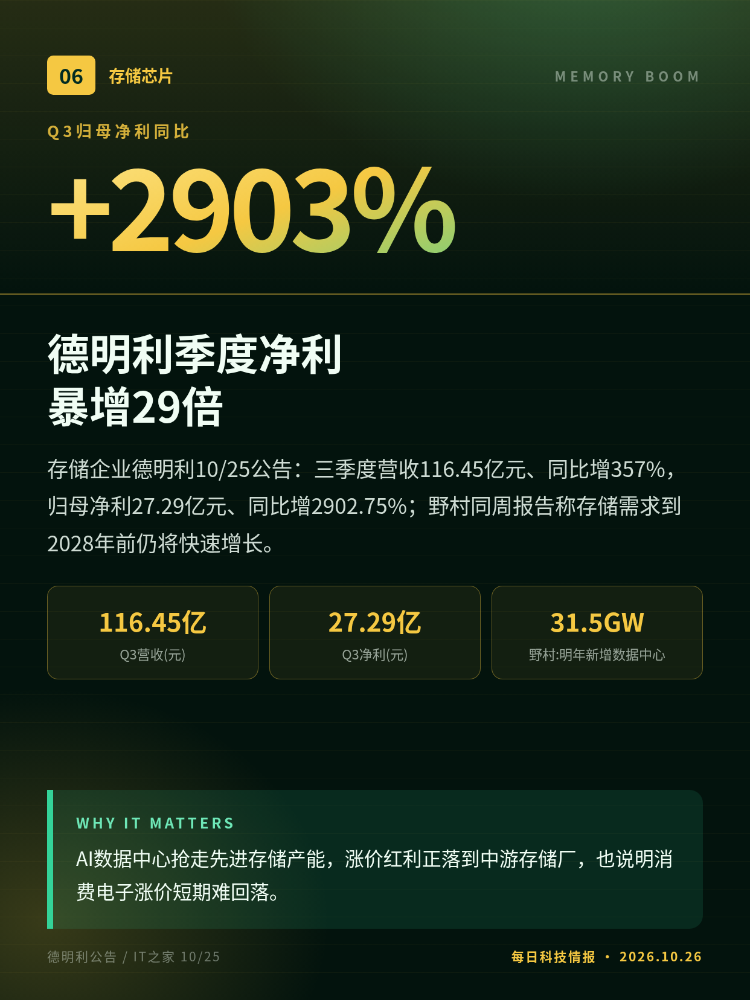
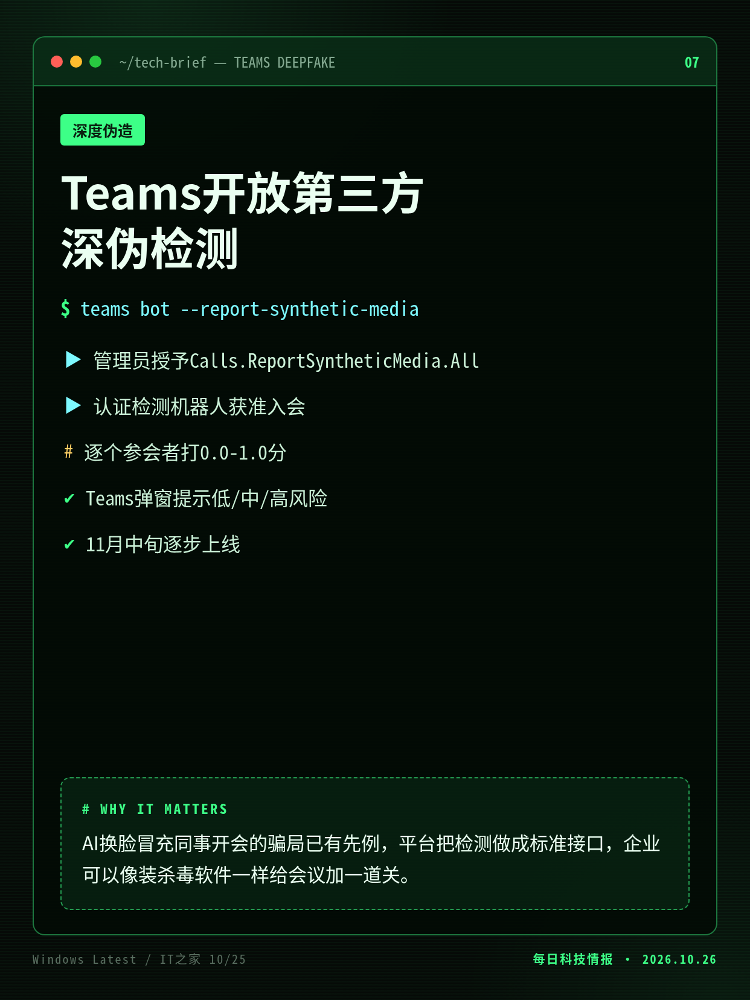
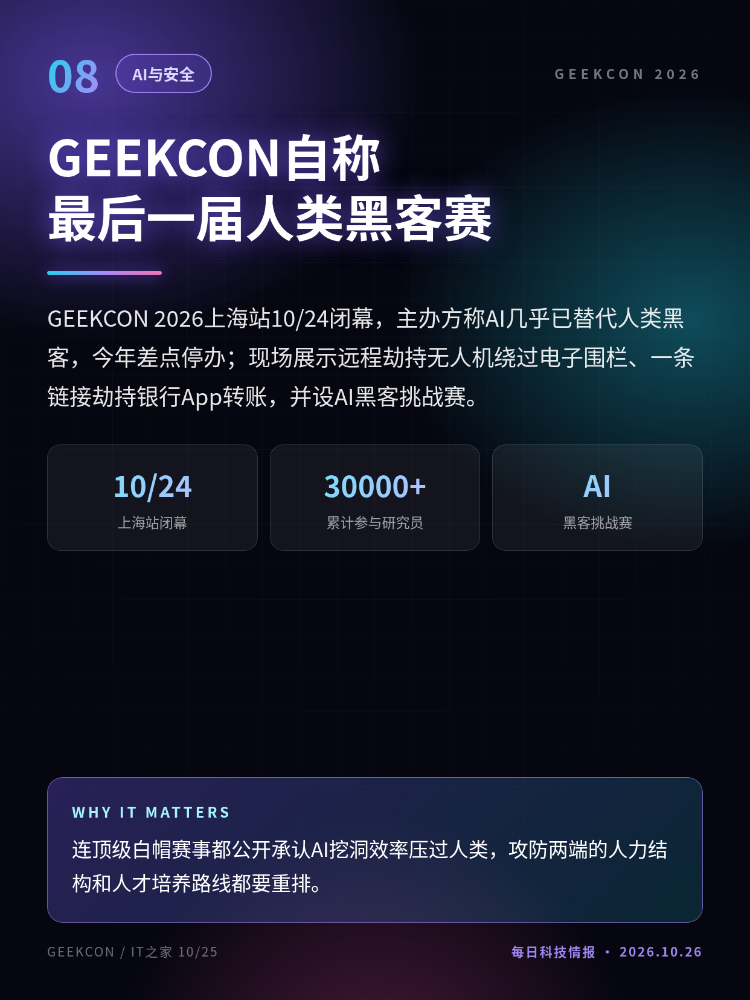
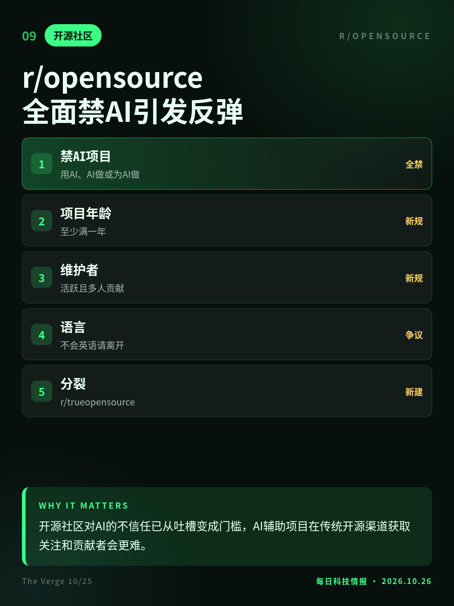
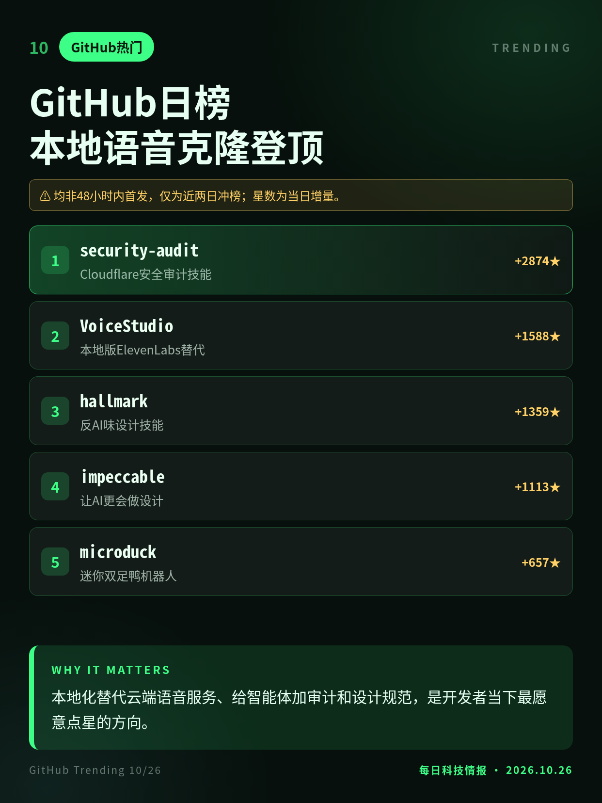

2026.10.26 · 周一 · 过去 48 小时
今日科技情报
共 10 条，按重要性排序。点标题直接跳过去。

共 10 条，按重要性排序。点标题直接跳过去。

马斯克10/25在X上称，过去几周债市几乎不再借钱给没有AI数据中心以外收入的公司；SpaceX已为买GPU完成400亿美元债务融资，因其是投资级并有星链和发射收入。
最大买家之一亲口确认融资分层：有现金流的巨头还能借，200多家新云将面临出清，算力供给会向少数玩家集中。
Forever Security在客户下载目录发现恶意AGENTS.md，诱Codex装恶意npm包；复现显示网页可静默放下该文件，Codex九成以上照做，Claude Code会泄露OAuth令牌。
智能体把工作目录里的说明文件当指令执行，而下载目录是网页能直接写入的地方，网页因此能间接指挥你的智能体。

猫王版权方10/23起诉Anthropic，称Claude未经许可用274首猫王歌曲训练、至今仍能输出歌词，按每首15万美元索赔约4110万美元，并要求禁令和销毁副本。
继作家、唱片公司之后，艺人遗产方也直接起诉，诉状把模型至今能输出歌词作为证据，输出侧版权风险被推到台前。

研究员Erica Windisch发布Tailworm报告：Tailscale SSH开启端口转发时，一台被控设备可在目标机拿到root并沿规则逐台扩散；Tailscale称在修，尚无CVE和补丁。
零信任组网把单点失陷放大成全网特权，自建headscale连转发都关不掉，运维需先自查SSH规则。

医生用200例活检确诊病例测试：微调20分钟的Inception v3正确率62%，GPT-6 Astra和Claude Fable 5.1均为42%；30例黑色素瘤两模型首选仅判对8例和11例。
通用大模型看图问诊远不如小型专用模型，医疗场景直接拿聊天机器人当诊断工具风险很高。

存储企业德明利10/25公告：三季度营收116.45亿元、同比增357%，归母净利27.29亿元、同比增2902.75%；野村同周报告称存储需求到2028年前仍将快速增长。
AI数据中心抢走先进存储产能，涨价红利正落到中游存储厂，也说明消费电子涨价短期难回落。

微软Teams将允许组织接入认证的第三方工具，扫描会议音视频检测深度伪造，11月中旬起在桌面版、Mac版和网页版推出；检测机器人给出0到1置信度和低中高三级判断。
AI换脸冒充同事开会的骗局已有先例，平台把检测做成标准接口，企业可以像装杀毒软件一样给会议加一道关。

GEEKCON 2026上海站10/24闭幕，主办方称AI几乎已替代人类黑客，今年差点停办；现场展示远程劫持无人机绕过电子围栏、一条链接劫持银行App转账，并设AI黑客挑战赛。
连顶级白帽赛事都公开承认AI挖洞效率压过人类，攻防两端的人力结构和人才培养路线都要重排。

r/opensource 10/24发布新规：用AI、由AI做或为AI做的项目都不欢迎，项目须满一年、多人维护，还让不会英语的用户离开；评论区炸锅，有人另立r/trueopensource。
开源社区对AI的不信任已从吐槽变成门槛，AI辅助项目在传统开源渠道获取关注和贡献者会更难。

10/26早GitHub日榜：全本地语音克隆工具VoiceStudio单日涨星最多之一，Cloudflare安全审计技能继续领涨，反AI味设计技能、迷你双足鸭机器人同时上榜。
本地化替代云端语音服务、给智能体加审计和设计规范，是开发者当下最愿意点星的方向。
Forever Security报告10/22首发，本条为10/25 BleepingComputer跟进复现。
均非48小时内首发，仅为近两日冲榜；星数为当日增量。
切换深浅两套图时，下载按钮会跟着当前这套走。黄标条目在新闻稿或官方口径出现前，请勿写成已交割或已定日期。上一期专区：2026-10-25。